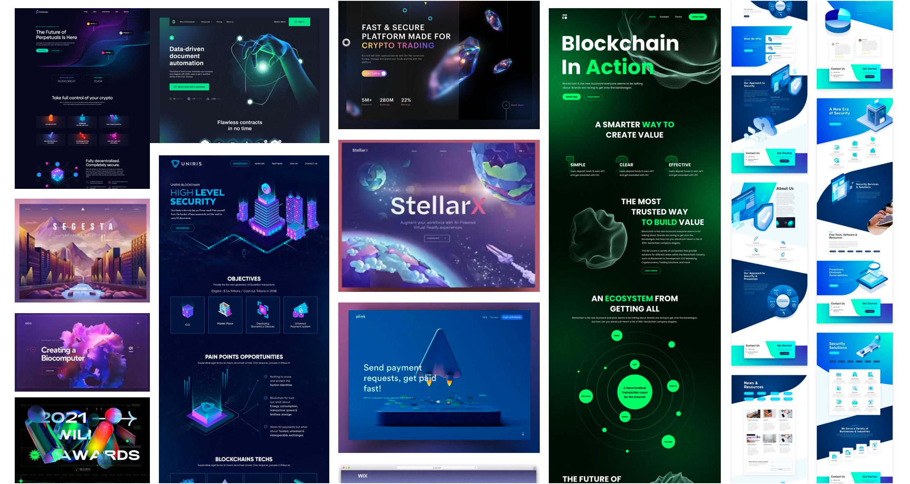

NATIONAL SECURITY
AGENCY
Project Overview
Revamping the architecture and navigation of the NSA website to enhance user experience, ensuring clear communication of the organization's mission and making information easily discoverable and engaging for users.
Roles
This was an individual project where I took responsibilities as UX Researcher, UX Designer, UX Writer and UI Designer.
Research
After creating heuristic analysis and research on the National Security Agency. We created a potential user persona that visits the website and defined a user path. From this we conducted Guerilla tests to identity pain points and learn about user navigation behaviour on both mobile and desktop and created a priority matrix against the high importance for the National Security Agency vs user, which we then voted upon key features we felt were most beneficial to the website mostly focusing on high importance for the both of them.

Definition
From the usability test I re-categorized the pages and created new, simplified headings for both the main navigation and footer. Additionally, I eliminated any duplicated pages to reduce confusion and improve the overall user experience. Based on the card sorting and feedback, I have rearranged a new primary navigation sitemap for the NSA.
Ideation
I gathered UI patterns and samples for inspiration as well as some other government agency website design inpiration for the moodboard for NSA. Keeping in mind to stay bold, authoriative, intellectural, neat and masculine.
Testing
I created a lo-fi prototype on Figma and conducted a five second user test to test the UI. User test feedback was mostly positive, except for the mobile homepage, prompted me to revert to a one column design for the News & Highlights section layout for better accessibility. After creating a style tile, I tested it out colouring and applying UI style to the website. And then iterating upon it and made a new style guide that included more iteraction designs, iconography and photography.
Prototyping
The user test results came back very positive from the mobile usability test. I used maze to conduct it and most ussers left a review that it was very easy to navigate desipite never having to visit before. I did recomendation that WCAG suggests multiple ways to find contact so I decided to add it to the navigation for easy access in mobile view.
Conclusion
Balancing information and visual engagement has presented its own set of challenges. Looking ahead, I believe it would be beneficial to focus on making the website responsive for tablets, ensuring a seamless experience across devices. If given more tiem I would liked to conduct more tests and iterate on better ways to display videos and improve button states.